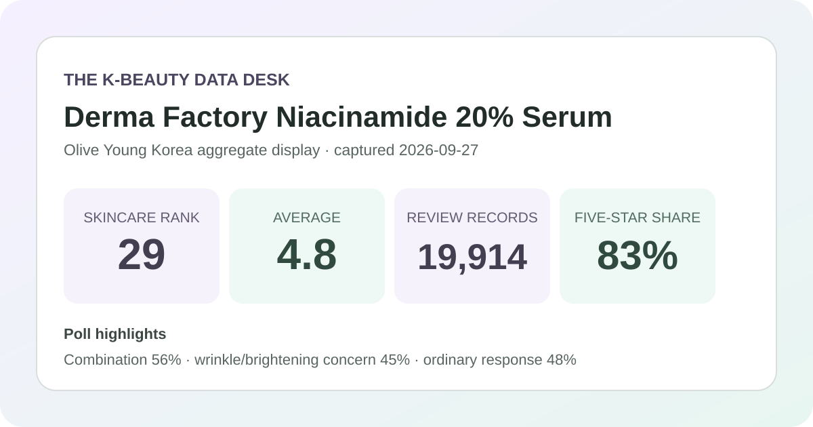
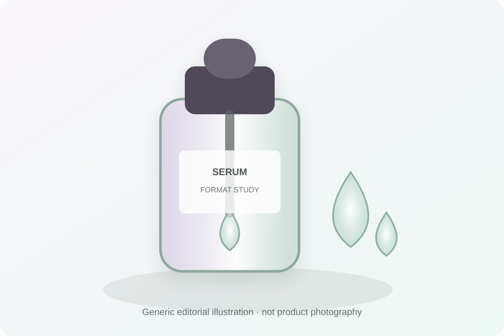

Data captured September 27, 2026. This is an independent analysis of retailer-displayed product information and anonymous aggregate review signals. I did not test the serum, and no individual review, reviewer identity, product photograph, or user photograph is copied or translated.

The short version: Derma Factory Niacinamide 20% Serum appeared at number 29 in the captured skincare sales ranking. Its product area and review detail agreed on 4.8 out of 5 from 19,914 records. Combination skin was the largest skin-type response at 56%, while “ordinary” was the largest irritation response at 48%.
The storefront distribution is strongly positive: 83% of displayed selections fall at five stars and another 12% at four stars. The large review base makes the 4.8 average more informative than a score based on only a handful of records. It still does not become a controlled comparison. Retail reviews may span different purchase dates, routines, expectations, promotions, and buyer circumstances.
The percentages are rounded, so they should not be multiplied by 19,914 to create exact counts. A displayed 0% for one-star selections is also not proof that no one selected one star; a small nonzero share can round down. The sound conclusion is limited: favorable rating selections dominate the accumulated records attached to this listing.
Combination skin was the largest captured skin-type response at 56%, followed by oily at 23% and dry at 21%. That distribution describes respondents who chose among the retailer's labels. It does not show that the serum works better for combination skin, that those labels were clinically assessed, or that the respondents represent all buyers.
The concern poll leaned toward wrinkle/brightening at 45%, with soothing at 34% and hydration at 21%. These labels are shopping-context responses, not instrument readings or verified changes. They are useful for understanding what respondents had in mind, but not for claiming that the product brightens, reduces wrinkles, soothes, or hydrates.
The irritation poll deserves particular attention: 48% selected ordinary, 42% selected gentle, and 9% selected felt irritation. The rounded total is 99%. Unlike a page where “gentle” leads, this display puts the middle response first and includes a visible irritation-selected minority. None of the shares predicts an individual response, but they argue against treating popularity or a high average as a universal tolerance claim.
The retailer's automated summary classified 85% of a recent-review subset as positive and grouped discussion around low price or value, oil-control impressions, and skin-surface or tone impressions. Those are anonymous aggregate themes only. This article does not reproduce the underlying review wording, identify reviewers, or assume the summary represents all 19,914 records.
Automated grouping can compress nuance and may merge distinct experiences. “Value” is especially dependent on the captured ₩5,700 promotion, while oil, texture, and tone language remains subjective. The themes are best used as questions to investigate—not as proof of sebum reduction, smoother skin, brightening, or any duration of effect.

The listing identifies a serum in a 30 ml format, so the local illustration shows only a generic dropper-and-liquid concept. I did not handle or apply the product. I cannot confirm whether it is watery, viscous, tacky, fast-drying, glossy, matte, fragrance-free, comfortable under sunscreen, or compatible with makeup.
Those practical details can matter more than a star average in a daily routine. A prospective buyer should look for a tester, current authorized description, or return policy if finish is decisive. The illustration deliberately avoids retailer photography, packaging, logos, and formula-specific visual claims.
The captured page showed ₩6,000 as the reference price and ₩5,700 as the promotional price for 30 ml. At the promotional price, that is ₩1,900 per 10 ml. It helps explain why value appeared in the automated themes, but a low unit price does not establish formula quality, performance, or suitability. Price, stock, coupons, seller terms, and regional availability can change.
“20%” appears in the retailer-displayed product name and is preserved for accurate identification. This analysis did not independently verify the current ingredient list, concentration method, purity, pH, stability, delivery, or regional formula. A number in a name does not show how much reaches skin, how it behaves in a complete formula, or whether more is better for a particular person.
If skin is actively inflamed, broken, recently treated, unusually reactive, or under medical care, retailer aggregates should not direct treatment. Follow the current label and qualified advice appropriate to the situation. Stop use if a concerning response occurs and seek help when needed.
The captured product area and full review panel both displayed 4.8 out of 5 from 19,914 records. Rounded star shares were 83% five-star, 12% four-star, 4% three-star, 1% two-star, and 0% one-star.
Combination was the largest skin-type poll response at 56%, followed by oily at 23%. That describes poll representation, not comparative performance or guaranteed suitability.
No. “Ordinary” was actually the largest response at 48%, and 9% selected felt irritation. These rounded self-reports are not a safety study and cannot predict personal tolerance.
The retailer name says 20%, but this article did not independently verify the current regional formula or testing. Check the package and authorized label for the item you will receive.
No. It is a brand-neutral local format illustration, not product photography, a swatch, a user image, or evidence of the real formula's look and feel.
Derma Factory Niacinamide 20% Serum was the first valid unpublished product family in the captured skincare ranking, appearing at number twenty-nine after twenty-eight already-covered products or promotional configurations. Its ranking and detail names agreed, two review surfaces matched on 4.8 stars from 19,914 records, and the page exposed a useful rounded star distribution plus three shopper polls.
The aggregate pattern is favorable but not friction-free: five-star selections dominate, combination skin is most represented, the middle irritation response leads, and 9% selected felt irritation. That supports a careful, data-limited shopping profile—not a claim that the serum controls oil, brightens, smooths, treats acne, prevents wrinkles, or suits every buyer. Verify the current formula and price, consider the routine context, and judge personal tolerance separately from popularity.
← All K-Beauty Data Desk reviews · Best-seller rankings · Skin-poll representation · About & methodology
The analysis is based on the dated retailer product page captured on 2026-09-27. Open the source listing.
Published by The K-Beauty Data Desk · Aggregate data captured 2026-09-27. No individual review text, name, product photo, or user photo is reproduced or translated. I did not test the product and received no product or payment for this coverage.